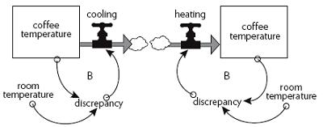
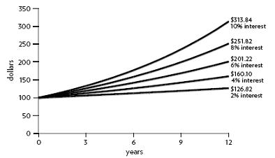

— ONE —
The Basics
ー一ー基本知识
_____________
是的，是的，是的
I have yet to see any problem, however complicated, which, when looked at in the right way, did not become still more complicated.
—POUL ANDERSON1
1
More Than the Sum of Its Parts
超过其各部分的总和
A system isn’t just any old collection of things. A system*
is an interconnected set of elements that is coherently organized in a way that achieves something. If you look at that definition closely for a minute, you can see that a system must consist of three kinds of things: elements, interconnections, and a function or purpose.
一个系统不是任何旧的东西的集合。一个系统 *
是一系列相互关联的元素，它们以一种连贯的方式组织起来，从而达到某种目的。如果你仔细研究一下这个定义，你会发现一个系统必须由三种东西组成: 元素、互连以及功能或目的。
For example, the elements of your digestive system include teeth, enzymes, stomach, and intestines. They are interrelated through the physical flow of food, and through an elegant set of regulating chemical signals. The function of this system is to break down food into its basic nutrients and to transfer those nutrients into the bloodstream (another system), while discarding unusable wastes.
例如，你的消化系统包括牙齿、酶、胃和肠。它们通过食物的物理流动，通过一系列优雅的调节化学信号相互关联。这个系统的功能是将食物分解成基本的营养物质，并将这些营养物质转移到血液(另一个系统)中，同时丢弃不可用的废物。
A football team is a system with elements such as players, coach, field, and ball. Its interconnections are the rules of the game, the coach’s strategy, the players’ communications, and the laws of physics that govern the motions of ball and players. The purpose of the team is to win games, or have fun, or get exercise, or make millions of dollars, or all of the above.
一个足球队是一个包含诸如球员、教练、场地和球的系统。它的相互联系是游戏规则、教练的策略、球员的交流以及控制球和球员运动的物理定律。球队的目的是赢得比赛，或者玩得开心，或者锻炼身体，或者赚取数百万美元，或者以上所有的一切。
A school is a system. So is a city, and a factory, and a corporation, and a national economy. An animal is a system. A tree is a system, and a forest is a larger system that encompasses subsystems of trees and animals. The earth is a system. So is the solar system; so is a galaxy. Systems can be embedded in systems, which are embedded in yet other systems.
学校是一个系统。城市、工厂、企业和国民经济也是如此。动物是一个系统。树是一个系统，而森林是一个更大的系统，包括树木和动物的子系统。地球是一个系统。太阳系也是，银河系也是。系统可以嵌入到系统中，而系统又可以嵌入到其他系统中。
Is there anything that is not a system? Yes—a conglomeration without any particular interconnections or function. Sand scattered on a road by happenstance is not, itself, a system. You can add sand or take away sand and you still have just sand on the road. Arbitrarily add or take away football players, or pieces of your digestive system, and you quickly no longer have the same system.
有什么东西不是系统吗？是的——一个没有任何特殊联系或功能的集合体。偶然散落在路上的沙子本身并不是一个系统。你可以添加沙子或者拿走沙子，但是路上还是只有沙子。任意添加或删除足球运动员，或你的消化系统的碎片，你很快就不再有相同的系统。
When a living creature dies, it loses its “system-ness.” The multiple interrelations that held it together no longer function, and it dissipates, although its material remains part of a larger food-web system. Some people say that an old city neighborhood where people know each other and communicate regularly is a social system, and that a new apartment block full of strangers is not—not until new relationships arise and a system forms.
当一个生物死了，它就失去了它的“系统性”尽管它的物质仍然是一个更大的食物网系统的一部分，但是将它们聚集在一起的多重相互关系不再起作用，它们消失了。一些人说，一个人们相互认识并经常交流的老城区是一个社会系统，而一个满是陌生人的新公寓楼则不是——直到新的关系出现，一个系统形成。
A system is more than the sum of its parts. It may exhibit adaptive, dynamic, goal-seeking, self-preserving, and sometimes evolutionary behavior.
You can see from these examples that there is an integrity or wholeness about a system and an active set of mechanisms to maintain that integrity. Systems can change, adapt, respond to events, seek goals, mend injuries, and attend to their own survival in lifelike ways, although they may contain or consist of nonliving things. Systems can be self-organizing, and often are self-repairing over at least some range of disruptions. They are resilient, and many of them are evolutionary. Out of one system other completely new, never-before-imagined systems can arise.
你可以从这些例子中看到，一个系统是完整的或整体的，并且有一套积极的机制来维持这种完整性。系统可以改变，适应，响应事件，寻求目标，修复伤害，以生命的方式关注自己的生存，尽管它们可能包含或组成无生命的东西。系统可以是自组织的，并且经常在至少一定范围的破坏中自我修复。它们是有弹性的，而且很多都是进化的。在一个系统之外，另一个全新的、前所未有的系统也会出现。
Look Beyond the Players to the Rules of the Game
透过玩家看游戏规则
You think that because you understand “one” that you must therefore understand “two” because one and one make two. But you forget that you must also understand “and.”
—Sufi teaching story
The elements of a system are often the easiest parts to notice, because many of them are visible, tangible things. The elements that make up a tree are roots, trunk, branches, and leaves. If you look more closely, you see specialized cells: vessels carrying fluids up and down, chloroplasts, and so on. The system called a university is made up of buildings, students, professors, administrators, libraries, books, computers—and I could go on and say what all those things are made up of. Elements do not have to be physical things. Intangibles are also elements of a system. In a university, school pride and academic prowess are two intangibles that can be very important elements of the system. Once you start listing the elements of a system, there is almost no end to the process. You can divide elements into sub-elements and then sub-sub-elements. Pretty soon you lose sight of the system. As the saying goes, you can’t see the forest for the trees.
系统的要素通常是最容易注意的部分，因为它们中的许多都是可见的、有形的东西。构成一棵树的元素包括树根、树干、树枝和树叶。如果你仔细观察，你会看到特殊的细胞: 上下运输液体的容器，叶绿体等等。所谓的大学系统是由建筑物、学生、教授、行政人员、图书馆、书籍、计算机组成的——我可以继续说这些东西是由什么组成的。元素不一定是物质的东西。无形的东西也是一个系统的元素。在一所大学里，学校的骄傲和学术能力是两个无形的因素，它们可能是系统中非常重要的元素。一旦你开始列举一个系统的要素，这个过程几乎没有尽头。你可以把元素分成子元素，然后再分成子元素。很快你就看不到系统了。俗话说得好，只见树木不见森林。
THINK ABOUT THIS
How to know whether you are looking at a system or just a bunch of stuff:
A ) Can you identify parts? . . . and
B) Do the parts affect each other? . . . and
C) Do the parts together produce an effect that is different from the effect of each part on its own? . . . and perhaps
D) Does the effect, the behavior over time, persist in a variety of circumstances?
Before going too far in that direction, it’s a good idea to stop dissecting out elements and to start looking for the interconnections, the relationships that hold the elements together.
在朝着这个方向走得太远之前，最好停止剖析元素，开始寻找相互联系，即将元素联系在一起的关系。
The interconnections in the tree system are the physical flows and chemical reactions that govern the tree’s metabolic processes—the signals that allow one part to respond to what is happening in another part. For example, as the leaves lose water on a sunny day, a drop in pressure in the water-carrying vessels allows the roots to take in more water. Conversely, if the roots experience dry soil, the loss of water pressure signals the leaves to close their pores, so as not to lose even more precious water.
树木系统中的相互联系是控制树木新陈代谢过程的物理流动和化学反应——这些信号允许一部分对另一部分发生的事情做出反应。例如，当树叶在阳光明媚的日子里失去水分时，携水容器中压力的下降使得树根吸收更多的水分。相反，如果根部经历干燥的土壤，失去水分压力信号的叶子关闭其毛孔，以便不失去更宝贵的水分。
As the days get shorter in the temperate zones, a deciduous tree puts forth chemical messages that cause nutrients to migrate out of the leaves into the trunk and roots and that weaken the stems, allowing the leaves to fall. There even seem to be messages that cause some trees to make repellent chemicals or harder cell walls if just one part of the plant is attacked by insects. No one understands all the relationships that allow a tree to do what it does. That lack of knowledge is not surprising. It’s easier to learn about a system’s elements than about its interconnections.
随着温带地区白天变短，落叶树释放出化学信息，导致营养物质从叶子迁移到树干和根部，削弱茎干，使叶子落下。甚至似乎还有一些信息会导致一些树木产生排斥性的化学物质或者如果植物的一部分受到昆虫的攻击就会产生更坚硬的细胞壁。没有人理解所有的关系，让一棵树做它所做的事情。这种知识的缺乏并不令人惊讶。了解一个系统的要素要比了解它的相互联系容易得多。
In the university system, interconnections include the standards for admission, the requirements for degrees, the examinations and grades, the budgets and money flows, the gossip, and most important, the communication of knowledge that is, presumably, the purpose of the whole system.
在大学系统中，相互联系包括入学标准、学位要求、考试和成绩、预算和资金流动、闲话，以及最重要的知识交流，这大概是整个系统的目的。
Many of the interconnections in systems operate through the flow of information. Information holds systems together and plays a great role in determining how they operate.
Some interconnections in systems are actual physical flows, such as the water in the tree’s trunk or the students progressing through a university. Many interconnections are flows of information—signals that go to decision points or action points within a system. These kinds of interconnections are often harder to see, but the system reveals them to those who look. Students may use informal information about the probability of getting a good grade to decide what courses to take. A consumer decides what to buy using information about his or her income, savings, credit rating, stock of goods at home, prices, and availability of goods for purchase. Governments need information about kinds and quantities of water pollution before they can create sensible regulations to reduce that pollution. (Note that information about the existence of a problem may be necessary but not sufficient to trigger action—information about resources, incentives, and consequences is necessary too.)
系统中的一些互联是实际的物理流动，例如树干中的水或学生在大学中的进步。许多互联是信息的流动——信号传递到系统中的决策点或行动点。这些类型的相互联系通常很难看到，但是系统向那些看到它们的人展示了它们。学生们可能会利用非正式的信息来决定选择什么课程。消费者根据他或她的收入、储蓄、信用评级、家中的商品存量、价格和可用的商品来决定购买什么。政府需要了解水污染的种类和数量，然后才能制定合理的法规来减少污染。(请注意，关于问题存在的信息可能是必要的，但不足以引发行动——关于资源、激励和后果的信息也是必要的。)
If information-based relationships are hard to see, functions or purposes are even harder. A system’s function or purpose is not necessarily spoken, written, or expressed explicitly, except through the operation of the system. The best way to deduce the system’s purpose is to watch for a while to see how the system behaves.
如果基于信息的关系很难看到，那么功能或目的就更难了。一个系统的功能或目的不一定是口头、书面或明确表达的，除非通过系统的运作。推断系统目的的最好方法是观察一段时间，看看系统是如何运作的。
If a frog turns right and catches a fly, and then turns left and catches a fly, and then turns around backward and catches a fly, the purpose of the frog has to do not with turning left or right or backward but with catching flies. If a government proclaims its interest in protecting the environment but allocates little money or effort toward that goal, environmental protection is not, in fact, the government’s purpose. Purposes are deduced from behavior, not from rhetoric or stated goals.
如果一只青蛙向右转，抓住了一只苍蝇，然后向左转，抓住了一只苍蝇，然后向后转，抓住了一只苍蝇，那么青蛙的目的不是向左或向右或向后转，而是抓住苍蝇。如果一个政府宣称对保护环境感兴趣，但是却很少为此投入资金或精力，那么环境保护实际上就不是政府的目的。目的是从行为中推断出来的，而不是从花言巧语或明确的目标中。
A NOTE ON LANGUAGE
The word function is generally used for a nonhuman system, the word purpose for a human one, but the distinction is not absolute, since so many systems have both human and nonhuman elements.
The function of a thermostat-furnace system is to keep a building at a given temperature. One function of a plant is to bear seeds and create more plants. One purpose of a national economy is, judging from its behavior, to keep growing larger. An important function of almost every system is to ensure its own perpetuation.
恒温炉系统的作用是使建筑物保持在一定的温度。植物的一个功能就是结出种子，培育出更多的植物。一个国家经济的一个目的是，从它的行为判断，保持增长更大。几乎所有系统的一个重要功能就是确保其自身的永续性。
System purposes need not be human purposes and are not necessarily those intended by any single actor within the system. In fact, one of the most frustrating aspects of systems is that the purposes of subunits may add up to an overall behavior that no one wants. No one intends to produce a society with rampant drug addiction and crime, but consider the combined purposes and consequent actions of the actors involved:
系统的目的不一定是人类的目的，也不一定是系统中任何一个行为者的目的。事实上，系统最令人沮丧的一个方面是，子单元的目的可能会累积成一个没有人想要的整体行为。没有人打算创造一个充斥着猖獗的毒瘾和犯罪的社会，但是考虑一下参与者的目的和结果行为:
• desperate people who want quick relief from psychological pain
• farmers, dealers, and bankers who want to earn money
• pushers who are less bound by civil law than are the police who oppose them
• governments that make harmful substances illegal and use police power to interdict them
• wealthy people living in close proximity to poor people
• nonaddicts who are more interested in protecting themselves than in encouraging recovery of addicts
Altogether, these make up a system from which it is extremely difficult to eradicate drug addiction and crime.
总之，这些因素构成了一个极难根除毒瘾和犯罪的体系。
Systems can be nested within systems. Therefore, there can be purposes within purposes. The purpose of a university is to discover and preserve knowledge and pass it on to new generations. Within the university, the purpose of a student may be to get good grades, the purpose of a professor may be to get tenure, the purpose of an administrator may be to balance the budget. Any of those sub-purposes could come into conflict with the overall purpose—the student could cheat, the professor could ignore the students in order to publish papers, the administrator could balance the budget by firing professors. Keeping sub-purposes and overall system purposes in harmony is an essential function of successful systems. I’ll get back to this point later when we come to hierarchies.
系统可以嵌套在系统中。因此，在目的中可以有目的。大学的目的是发现和保存知识，并将其传递给下一代。在大学里，学生的目的可能是取得好成绩，教授的目的可能是获得终身职位，管理人员的目的可能是平衡预算。这些子目标中的任何一个都可能与整体目标相冲突——学生可以作弊，教授可以为了发表论文而忽视学生，管理员可以通过解雇教授来平衡预算。保持子目标和整个系统目标的和谐是成功系统的基本功能。稍后，当我们谈到层次结构时，我会回到这一点。
You can understand the relative importance of a system’s elements, interconnections, and purposes by imagining them changed one by one. Changing elements usually has the least effect on the system. If you change all the players on a football team, it is still recognizably a football team. (It may play much better or much worse—particular elements in a system can indeed be important.) A tree changes its cells constantly, its leaves every year or so, but it is still essentially the same tree. Your body replaces most of its cells every few weeks, but it goes on being your body. The university has a constant flow of students and a slower flow of professors and administrators, but it is still a university. In fact it is still the same university, distinct in subtle ways from others, just as General Motors and the U.S. Congress somehow maintain their identities even though all their members change. A system generally goes on being itself, changing only slowly if at all, even with complete substitutions of its elements—as long as its interconnections and purposes remain intact.
您可以通过想象一个系统的元素、互连和目的一个接一个地改变，来理解它们的相对重要性。改变元素通常对系统的影响最小。如果你改变了一个足球队的所有球员，那么它仍然是一个足球队。(它可能打得更好，也可能打得更差——一个体系中的特定元素确实很重要一棵树不断地改变它的细胞，它的叶子每年左右，但它本质上仍然是同一棵树。你的身体每隔几周就会更换大部分细胞，但它仍然是你的身体。这所大学的学生源源不断，教授和管理人员的流动缓慢，但它仍然是一所大学。事实上，它仍然是同一所大学，以微妙的方式区别于其他大学，就像通用汽车公司和美国国会在某种程度上保持他们的身份，即使他们的所有成员都变了。一个系统通常会继续存在，即使有所改变，也只是缓慢地变化，即使它的元素被完全替换——只要它的相互联系和目的保持不变。
The least obvious part of the system, its function or purpose, is often the most crucial determinant of the system’s behavior.
If the interconnections change, the system may be greatly altered. It may even become unrecognizable, even though the same players are on the team. Change the rules from those of football to those of basketball, and you’ve got, as they say, a whole new ball game. If you change the interconnections in the tree—say that instead of taking in carbon dioxide and emitting oxygen, it does the reverse—it would no longer be a tree. (It would be an animal.) If in a university the students graded the professors, or if arguments were won by force instead of reason, the place would need a different name. It might be an interesting organization, but it would not be a university. Changing interconnections in a system can change it dramatically.
如果互连发生变化，系统可能会发生巨大的变化。它甚至可能变得面目全非，即使是团队中的同一个人。把足球的规则改变成篮球的规则，就像他们说的，你就有了一个全新的球赛。如果你改变树中的相互联系——说它不吸收二氧化碳并释放氧气，而是相反——它就不再是一棵树了。(它将成为一种动物如果在一所大学里，学生们给教授们打分，或者如果争论是通过武力而不是理性赢得的，那么这个地方就需要一个不同的名字。它可能是一个有趣的组织，但不会是一所大学。改变一个系统中的相互联系可以戏剧性地改变它。
Changes in function or purpose also can be drastic. What if you keep the players and the rules but change the purpose—from winning to losing, for example? What if the function of a tree were not to survive and reproduce but to capture all the nutrients in the soil and grow to unlimited size? People have imagined many purposes for a university besides disseminating knowledge—making money, indoctrinating people, winning football games. A change in purpose changes a system profoundly, even if every element and interconnection remains the same.
功能或目的的改变也可能是剧烈的。如果你保持球员和规则，但改变目的-从胜利到失败，例如？如果一棵树的功能不是生存和繁殖，而是捕捉土壤中所有的养分，并且生长到无限大会怎么样？除了传播知识——赚钱，给人们灌输思想，赢得足球比赛——人们已经想象出了大学的许多用途。目的的改变会深刻地改变一个系统，即使每个元素和相互联系都是相同的。
To ask whether elements, interconnections, or purposes are most important in a system is to ask an unsystemic question. All are essential. All interact. All have their roles. But the least obvious part of the system, its function or purpose, is often the most crucial determinant of the system’s behavior. Interconnections are also critically important. Changing relationships usually changes system behavior. The elements, the parts of systems we are most likely to notice, are often (not always) least important in defining the unique characteristics of the system—unless changing an element also results in changing relationships or purpose.
要问一个系统中的元素、相互联系或目的是否是最重要的，就是在问一个非系统性的问题。一切都是必不可少的。所有的相互作用。每个人都有自己的角色。但是系统最不明显的部分，它的功能或目的，往往是系统行为的最关键的决定因素。互连也是至关重要的。改变关系通常会改变系统行为。在定义系统的独特特性时，我们最有可能注意到的系统元素通常(并非总是)是最不重要的——除非改变一个元素也会导致改变关系或目的。
Changing just one leader at the top—from a Brezhnev to a Gorbachev, or from a Carter to a Reagan—may or may not turn an entire nation in a new direction, though its land, factories, and hundreds of millions of people remain exactly the same. A leader can make that land and those factories and people play a different game with new rules, or can direct the play toward a new purpose.
仅仅更换一位高层领导人——从勃列日涅夫到戈尔巴乔夫，或者从卡特到里根——可能会也可能不会把整个国家带向一个新的方向，尽管它的土地、工厂和数亿人民仍然完全一样。一个领导人可以让这片土地和这些工厂以及人们用新的规则玩一场不同的游戏，或者可以引导这场游戏走向一个新的目标。
And conversely, because land, factories, and people are long-lived, slowly changing, physical elements of the system, there is a limit to the rate at which any leader can turn the direction of a nation.
相反地，由于土地、工厂和人民是长寿的、缓慢变化的、系统的物质要素，任何领导人改变国家方向的速度都是有限的。
Bathtubs 101—Understanding System Behavior over Time
浴缸101ー了解系统随时间变化的行为
Information contained in nature . . . allows us a partial reconstruction of the past. . . . The development of the meanders in a river, the increasing complexity of the earth’s crust . . . are information-storing devices in the same manner that genetic systems are. . . . Storing information means increasing the complexity of the mechanism.
—Ramon Margalef2
2
A stock is the foundation of any system. Stocks are the elements of the system that you can see, feel, count, or measure at any given time. A system stock is just what it sounds like: a store, a quantity, an accumulation of material or information that has built up over time. It may be the water in a bathtub, a population, the books in a bookstore, the wood in a tree, the money in a bank, your own self-confidence. A stock does not have to be physical. Your reserve of good will toward others or your supply of hope that the world can be better are both stocks.
股票是任何系统的基础。股票是系统的元素，你可以在任何给定的时间看到、感觉到、计算或测量。一个系统库存就是它听起来的样子: 一个存储，一个数量，一个随着时间积累的材料或信息的积累。它可能是浴缸里的水，人口，书店里的书，树上的木头，银行里的钱，你自己的自信。一支股票不一定是实体的。你对他人的善意或者你对世界变得更好的希望都是股票。
A stock is the memory of the history of changing flows within the system.
Stocks change over time through the actions of a flow. Flows are filling and draining, births and deaths, purchases and sales, growth and decay, deposits and withdrawals, successes and failures. A stock, then, is the present memory of the history of changing flows within the system.
股票随着时间的流动而改变。资本流动充盈和流失，出生和死亡，购买和销售，增长和衰退，存款和取款，成功和失败。因此，股票是系统内部流动变化历史的当前记忆。
Figure 1. How to read stock-and-flow diagrams. In this book, stocks are shown as boxes, and flows as arrow-headed “pipes” leading into or out of the stocks. The small T on each flow signifies a “faucet;” it can be turned higher or lower, on or off. The “clouds” stand for wherever the flows come from and go to—the sources and sinks that are being ignored for the purposes of the present discussion.
图1。如何阅读股票和流程图。在这本书中，股票以盒子的形式显示，而流量则以箭头形状的“管道”进出股票。每个流量上的小 t 表示一个“水龙头”; 它可以调高或调低，开或关。”云”代表流动的来源和去向ーー为了本讨论的目的而被忽略的源和汇。
For example, an underground mineral deposit is a stock, out of which comes a flow of ore through mining. The inflow of ore into a mineral deposit is minute in any time period less than eons. So I have chosen to draw (Figure 2) a simplified picture of the system without any inflow. All system diagrams and descriptions are simplified versions of the real world.
例如，一个地下矿床是一个股票，其中来自矿石流通过采矿。矿石进入矿床的流量在任何时间段都是微小的，小于亿万年。所以我选择画一幅没有任何流入的系统的简化图(图2)。所有的系统图和描述都是现实世界的简化版本。
Figure 2. A stock of minerals depleted by mining.
图2. 因采矿而耗尽的矿物储量。
Water in a reservoir behind a dam is a stock, into which flow rain and river water, and out of which flows evaporation from the reservoir’s surface as well as the water discharged through the dam.
大坝后的水库中的水是一个蓄水池，雨水和河水从蓄水池中流入，从蓄水池表面蒸发出来，水也从蓄水池中排出。
Figure 3. A stock of water in a reservoir with multiple inflows and outflows.
图3. 具有多次流入和流出的水库中的水存量。
The volume of wood in the living trees in a forest is a stock. Its inflow is the growth of the trees. Its outflows are the natural deaths of trees and the harvest by loggers. The logging harvest flows into another stock, perhaps an inventory of lumber at a mill. Wood flows out of the inventory stock as lumber sold to customers.
森林中活着的树木的体积是一种木材。它的流入是树木的生长。它的流出是树木的自然死亡和伐木者的收获。伐木收获物流入另一个库存，可能是一个木材加工厂的木材库存。木材从库存中流出，作为木材销售给客户。
Figure 4. A stock of lumber linked to a stock of trees in a forest.
图4. 与森林中的树木相连的木材存量。
If you understand the dynamics of stocks and flows—their behavior over time—you understand a good deal about the behavior of complex systems. And if you have had much experience with a bathtub, you understand the dynamics of stocks and flows.
如果你了解股票和流动的动态——它们随着时间的推移的行为——你就会对复杂系统的行为有很多了解。如果你对浴缸有丰富的经验，你就会了解股票和流动的动态。
Figure 5. The structure of a bathtub system—one stock with one inflow and one outflow.
图5. 浴缸系统的结构——一个进料口和一个出料口。
Imagine a bathtub filled with water, with its drain plugged up and its faucets turned off—an unchanging, undynamic, boring system. Now mentally pull the plug. The water runs out, of course. The level of water in the tub goes down until the tub is empty.
想象一下，一个装满水的浴缸，下水道堵塞，水龙头关闭——一个不变的、不动的、无聊的系统。现在，从心理上拔掉插头。当然，水已经用完了。浴缸里的水位不断下降，直到浴缸空了。
Figure 6. Water level in a tub when the plug is pulled.
图6. 拔出插头时浴缸中的水位。
A NOTE ON READING GRAPHS OF BEHAVIOR OVER TIME
Systems thinkers use graphs of system behavior to understand trends over time, rather than focusing attention on individual events. We also use behavior-over-time graphs to learn whether the system is approaching a goal or a limit, and if so, how quickly.
The variable on the graph may be a stock or a flow. The pattern—the shape of the variable line—is important, as are the points at which that line changes shape or direction. The precise numbers on the axes are often less important.
The horizontal axis of time allows you to ask questions about what came before, and what might happen next. It can help you focus on the time horizon appropriate to the question or problem you are investigating.
Now imagine starting again with a full tub, and again open the drain, but this time, when the tub is about half empty, turn on the inflow faucet so the rate of water flowing in is just equal to that flowing out. What happens?
现在想象一下，从一个装满水的浴缸开始，再次打开排水口，但是这次，当浴缸大约一半是空的时候，打开流入的水龙头，这样水流进去的速度和流出去的速度是一样的。发生了什么？
The amount of water in the tub stays constant at whatever level it had reached when the inflow became equal to the outflow. It is in a state of dynamic equilibrium—its level does not change, although water is continuously flowing through it.
当流入与流出相等时，浴缸中的水量保持不变，不管达到什么水平。它处于一种动态平衡状态——水位不变，尽管水不断地流过它。
Figure 7. Constant outflow, inflow turned on after 5 minutes, and the resulting changes in the stock of water in the tub.
图7。持续不断的流出，5分钟后开始流入，导致浴缸中水的储存量发生变化。
Imagine turning the inflow on somewhat harder while keeping the outflow constant. The level of water in the tub slowly rises. If you then turn the inflow faucet down again to match the outflow exactly, the water in the tub will stop rising. Turn it down some more, and the water level will fall slowly.
想象一下，在保持流出不变的情况下，更难地打开流入。浴缸里的水位慢慢上升。如果你再次关闭流入的水龙头以精确地匹配流出的水，浴缸里的水就会停止上升。再关小一点，水位就会慢慢下降。
This model of a bathtub is a very simple system with just one stock, one inflow, and one outflow. Over the time period of interest (minutes), I have assumed that evaporation from the tub is insignificant, so I have not included that outflow. All models, whether mental models or mathematical models, are simplifications of the real world. You know all the dynamic possibilities of this bathtub. From it you can deduce several important principles that extend to more complicated systems:
这个浴缸模型是一个非常简单的系统，只有一个库存，一个流入，一个流出。在感兴趣的时间段内(分钟) ，我假设浴缸的蒸发量是微不足道的，所以我没有包括这个流出量。所有的模型，无论是心理模型还是数学模型，都是现实世界的简化。你知道这个浴缸的所有动态可能性。从中你可以推导出几个重要的原理，这些原理可以延伸到更复杂的系统:
• As long as the sum of all inflows exceeds the sum of all outflows, the level of the stock will rise.
• As long as the sum of all outflows exceeds the sum of all inflows, the level of the stock will fall.
• If the sum of all outflows equals the sum of all inflows, the stock level will not change; it will be held in dynamic equilibrium at whatever level it happened to be when the two sets of flows became equal.
The human mind seems to focus more easily on stocks than on flows. On top of that, when we do focus on flows, we tend to focus on inflows more easily than on outflows. Therefore, we sometimes miss seeing that we can fill a bathtub not only by increasing the inflow rate, but also by decreasing the outflow rate. Everyone understands that you can prolong the life of an oil-based economy by discovering new oil deposits. It seems to be harder to understand that the same result can be achieved by burning less oil. A breakthrough in energy efficiency is equivalent, in its effect on the stock of available oil, to the discovery of a new oil field—although different people profit from it.
人类的大脑似乎更容易关注股票而不是资金流动。最重要的是，当我们关注资金流动时，我们往往更容易关注资金流入而不是资金流出。因此，我们有时会忽略这样一个事实: 我们不仅可以通过增加流入速度，而且可以通过降低流出速度来填满浴缸。每个人都明白，你可以通过发现新的石油储量来延长以石油为基础的经济的寿命。似乎更难理解的是，同样的结果可以通过燃烧更少的石油来实现。能源效率方面的突破，就其对可用石油储量的影响而言，相当于发现了一个新油田——尽管不同的人从中获益。
A stock can be increased by decreasing its outflow rate as well as by increasing its inflow rate. There’s more than one way to fill a bathtub!
Similarly, a company can build up a larger workforce by more hiring, or it can do the same thing by reducing the rates of quitting and firing. These two strategies may have very different costs. The wealth of a nation can be boosted by investment to build up a larger stock of factories and machines. It also can be boosted, often more cheaply, by decreasing the rate at which factories and machines wear out, break down, or are discarded.
同样，一家公司可以通过增加雇佣来扩大员工队伍，也可以通过降低辞职和解雇率来做同样的事情。这两种策略的成本可能非常不同。一个国家的财富可以通过投资建立更多的工厂和机器来增加。还可以通过降低工厂和机器磨损、故障或被丢弃的速度来增加，而且通常成本更低。
You can adjust the drain or faucet of a bathtub—the flows—abruptly, but it is much more difficult to change the level of water—the stock—quickly. Water can’t run out the drain instantly, even if you open the drain all the way. The tub can’t fill up immediately, even with the inflow faucet on full blast. A stock takes time to change, because flows take time to flow. That’s a vital point, a key to understanding why systems behave as they do. Stocks usually change slowly. They can act as delays, lags, buffers, ballast, and sources of momentum in a system. Stocks, especially large ones, respond to change, even sudden change, only by gradual filling or emptying.
你可以突然调整浴缸的排水口或水龙头(水流) ，但要迅速调整水位(水量)就困难得多了。即使你把排水管全部打开，水也不能立刻流出去。即使水龙头开到最大，浴缸也不能立即充满水。股票需要时间改变，因为流动需要时间流动。这是一个至关重要的问题，也是理解系统为什么会这样运行的关键。股票通常变化缓慢。它们可以作为一个系统中的延迟、滞后、缓冲、压舱物和动力源。股票，尤其是大型股票，只有通过逐渐填充或清空，才能对变化，甚至是突然的变化做出反应。
Stocks generally change slowly, even when the flows into or out of them change suddenly. Therefore, stocks act as delays or buffers or shock absorbers in systems.
People often underestimate the inherent momentum of a stock. It takes a long time for populations to grow or stop growing, for wood to accumulate in a forest, for a reservoir to fill up, for a mine to be depleted. An economy cannot build up a large stock of functioning factories and highways and electric plants overnight, even if a lot of money is available. Once an economy has a lot of oil-burning furnaces and automobile engines, it cannot change quickly to furnaces and engines that burn a different fuel, even if the price of oil suddenly changes. It has taken decades to accumulate the stratospheric pollutants that destroy the earth’s ozone layer; it will take decades for those pollutants to be removed.
人们经常低估股票的内在动力。人口增长或停止增长需要很长时间，森林中的木材积累需要很长时间，水库需要填满，矿井需要耗尽。一个经济体不可能在一夜之间建立起大量正常运转的工厂、高速公路和发电厂，即使有大量的资金可用。一个经济体一旦拥有大量燃油的熔炉和汽车发动机，就不可能迅速转向燃烧不同燃料的熔炉和发动机，即使油价突然发生变化。破坏地球臭氧层的平流层污染物已经积累了几十年; 要清除这些污染物还需要几十年的时间。
Changes in stocks set the pace of the dynamics of systems. Industrialization cannot proceed faster than the rate at which factories and machines can be constructed and the rate at which human beings can be educated to run and maintain them. Forests can’t grow overnight. Once contaminants have accumulated in groundwater, they can be washed out only at the rate of groundwater turnover, which may take decades or even centuries.
股票的变化决定了系统动态的步伐。工业化的进展速度不可能超过工厂和机器的建造速度，也不可能超过教育人类运行和维护工厂和机器的速度。森林不可能一夜之间成长起来。一旦污染物在地下水中积累，它们只能以地下水周转的速度被冲走，这可能需要几十年甚至几个世纪的时间。
The time lags that come from slowly changing stocks can cause problems in systems, but they also can be sources of stability. Soil that has accumulated over centuries rarely erodes all at once. A population that has learned many skills doesn’t forget them immediately. You can pump groundwater faster than the rate it recharges for a long time before the aquifer is drawn down far enough to be damaged. The time lags imposed by stocks allow room to maneuver, to experiment, and to revise policies that aren’t working.
缓慢变化的库存导致的时间滞后可能会给系统带来问题，但也可能是稳定性的来源。几个世纪以来积累起来的土壤很少会一下子全部腐蚀掉。一个已经学会了很多技能的种群不会立刻忘记这些技能。你可以用比地下水补给速度更快的速度抽取地下水，直到地下水被抽取到足以破坏地下水的程度。库存所带来的时间滞后给了我们回旋的余地，让我们可以进行实验，修改那些不起作用的政策。
If you have a sense of the rates of change of stocks, you don’t expect things to happen faster than they can happen. You don’t give up too soon. You can use the opportunities presented by a system’s momentum to guide it toward a good outcome—much as a judo expert uses the momentum of an opponent to achieve his or her own goals.
如果你对股票的变化率有所了解，你就不会期望事情发生得比预期的更快。你不会很快就放弃。你可以利用系统的动力所带来的机会来引导系统走向好的结果，就像柔道专家利用对手的动力来达到自己的目标一样。
There is one more important principle about the role of stocks in systems, a principle that will lead us directly to the concept of feedback. The presence of stocks allows inflows and outflows to be independent of each other and temporarily out of balance with each other.
关于股票在系统中的作用还有一个更重要的原则，这个原则将直接引导我们理解反馈的概念。股票的存在允许资金流入和流出相互独立，暂时失去平衡。
Stocks allow inflows and outflows to be decoupled and to be independent and temporarily out of balance with each other.
It would be hard to run an oil company if gasoline had to be produced at the refinery at exactly the rate the cars were burning it. It isn’t feasible to harvest a forest at the precise rate at which the trees are growing. Gasoline in storage tanks and wood in the forest are both stocks that permit life to proceed with some certainty, continuity, and predictability, even though flows vary in the short term.
如果炼油厂必须以汽车燃烧的速度生产汽油，那么经营一家石油公司就会很困难。以树木生长的精确速度收获森林是不可行的。储存罐中的汽油和森林中的木材都是可以使生命以某种确定性、连续性和可预测性进行的储存，即使流量在短期内有所变化。
Human beings have invented hundreds of stock-maintaining mechanisms to make inflows and outflows independent and stable. Reservoirs enable residents and farmers downriver to live without constantly adjusting their lives and work to a river’s varying flow, especially its droughts and floods. Banks enable you temporarily to earn money at a rate different from how you spend. Inventories of products along a chain from distributors to wholesalers to retailers allow production to proceed smoothly although customer demand varies, and allow customer demand to be filled even though production rates vary.
人类已经发明了数以百计的库存保持机制，使流入和流出变得独立和稳定。水库使得下游的居民和农民无需不断调整他们的生活和工作来适应河流的变化，特别是干旱和洪水。银行可以让你暂时以不同于你花钱方式的速度赚钱。从分销商到批发商再到零售商的产品库存使得生产能够顺利进行，尽管客户需求不同，而且即使生产率不同，也能满足客户的需求。
Most individual and institutional decisions are designed to regulate the levels in stocks. If inventories rise too high, then prices are cut or advertising budgets are increased, so that sales will go up and inventories will fall. If the stock of food in your kitchen gets low, you go to the store. As the stock of growing grain rises or fails to rise in the fields, farmers decide whether to apply water or pesticide, grain companies decide how many barges to book for the harvest, speculators bid on future values of the harvest, cattle growers build up or cut down their herds. Water levels in reservoirs cause all sorts of corrective actions if they rise too high or fall too low. The same can be said for the stock of money in your wallet, the oil reserves owned by an oil company, the pile of woodchips feeding a paper mill, and the concentration of pollutants in a lake.
大多数个人和机构的决定旨在调节股票的水平。如果库存过高，那么价格就会下降，广告预算就会增加，这样销售额就会上升，库存就会下降。如果你厨房里的食物库存变低，你就去商店。随着种植粮食的库存在地里增加或不增加，农民决定是用水还是用杀虫剂，粮食公司决定为收获预订多少驳船，投机者竞标收获的未来价值，养牛人增加或减少他们的牛群。如果水库的水位上升得太高或下降得太低，就会导致各种纠正措施。你钱包里的存款、石油公司的石油储备、造纸厂里的一堆木屑，以及湖泊中的污染物浓度也是如此。
People monitor stocks constantly and make decisions and take actions designed to raise or lower stocks or to keep them within acceptable ranges.
人们不断地监控库存，做出决定并采取行动，旨在增加或减少库存，或将其保持在可接受的范围内。
Those decisions add up to the ebbs and flows, successes and problems, of all sorts of systems. Systems thinkers see the world as a collection of stocks along with the mechanisms for regulating the levels in the stocks by manipulating flows.
这些决定加起来就是各种制度的潮起潮落、成功和问题。系统思想家将世界视为一个股票的集合，以及通过操纵流动来调节股票水平的机制。
That means system thinkers see the world as a collection of “feedback processes.”
这意味着系统思考者将世界视为“反馈过程”的集合
How the System Runs Itself— Feedback
系统如何自我运行ー反馈
Systems of information-feedback control are fundamental to all life and human endeavor, from the slow pace of biological evolution to the launching of the latest space satellite. . . . Everything we do as individuals, as an industry, or as a society is done in the context of an information-feedback system.
—Jay W. Forrester3
3
When a stock grows by leaps and bounds or declines swiftly or is held within a certain range no matter what else is going on around it, it is likely that there is a control mechanism at work. In other words, if you see a behavior that persists over time, there is likely a mechanism creating that consistent behavior. That mechanism operates through a feedback loop. It is the consistent behavior pattern over a long period of time that is the first hint of the existence of a feedback loop.
当一只股票突飞猛进地增长或迅速下跌，或者不管周围发生什么情况，都在一定范围内持有时，很可能存在一种控制机制在起作用。换句话说，如果你看到一种行为随着时间的推移而持续存在，那么很可能是一种机制创造了这种持续的行为。这种机制通过一个反馈回路运行。它是长时间一致的行为模式，是反馈回路存在的第一个暗示。
A feedback loop is formed when changes in a stock affect the flows into or out of that same stock. A feedback loop can be quite simple and direct. Think of an interest-bearing savings account in a bank. The total amount of money in the account (the stock) affects how much money comes into the account as interest. That is because the bank has a rule that the account earns a certain percent interest each year. The total dollars of interest paid into the account each year (the flow in) is not a fixed amount, but varies with the size of the total in the account.
当股票的变化影响流入或流出同一股票时，就形成了一个反馈回路。反馈回路可以非常简单和直接。想想银行里的一个有利息的储蓄账户。账户里的钱(股票)的总量会影响到有多少钱作为利息进入账户。这是因为银行有一个规则，即账户每年获得一定百分比的利息。每年支付到账户的利息总额(流入)不是一个固定的数额，而是随着账户总额的大小而变化。
You experience another fairly direct kind of feedback loop when you get your bank statement for your checking account each month. As your level of available cash in the checking account (a stock) goes down, you may decide to work more hours and earn more money. The money entering your bank account is a flow that you can adjust in order to increase your stock of cash to a more desirable level. If your bank account then grows very large, you may feel free to work less (decreasing the inflow). This kind of feedback loop is keeping your level of cash available within a range that is acceptable to you. You can see that adjusting your earnings is not the only feedback loop that works on your stock of cash. You also may be able to adjust the outflow of money from your account, for example. You can imagine an outflow-adjusting feedback loop for spending.
当你每个月收到支票账户的银行对账单时，你会经历另一种相当直接的反馈循环。随着你支票账户(股票)中可用现金的水平下降，你可能会决定工作更多的时间，赚更多的钱。进入你银行账户的钱是一个你可以调整的流动，以增加你的现金存量到一个更理想的水平。如果你的银行账户变得非常庞大，你可以自由地减少工作量(减少流入)。这种反馈循环使你的现金水平保持在你可以接受的范围内。你可以看到，调整你的收入并不是唯一对你的现金存量起作用的反馈回路。例如，你也可以调整你账户上的资金流出。你可以想象一个支出调整反馈回路。
Feedback loops can cause stocks to maintain their level within a range or grow or decline. In any case, the flows into or out of the stock are adjusted because of changes in the size of the stock itself. Whoever or whatever is monitoring the stock’s level begins a corrective process, adjusting rates of inflow or outflow (or both) and so changing the stock’s level. The stock level feeds back through a chain of signals and actions to control itself.
反馈循环可以使股票保持在一个范围内的水平或增长或下降。在任何情况下，流入或流出股票是由于股票本身规模的变化而调整的。无论是谁，无论是什么在监控股票的水平开始一个纠正过程，调整流入或流出(或两者)的比率，从而改变股票的水平。库存水平通过一系列信号和行为反馈来控制自身。
Figure 8. How to read a stock-and-flow diagram with feedback loops. Each diagram distinguishes the stock, the flow that changes the stock, and the information link (shown as a thin, curved arrow) that directs the action. It emphasizes that action or change always proceeds through adjusting flows.
图8。如何阅读带有反馈回路的库存和流程图。每个图表都区分股票、改变股票的流程以及指导行动的信息链接(显示为一个弯曲的细箭头)。它强调行动或变化总是通过调整流量来进行。
Not all systems have feedback loops. Some systems are relatively simple open-ended chains of stocks and flows. The chain may be affected by outside factors, but the levels of the chain’s stocks don’t affect its flows. However, those systems that contain feedback loops are common and may be quite elegant or rather surprising, as we shall see.
并不是所有的系统都有反馈回路。有些系统是相对简单的开放式股票和流量链。链条可能会受到外部因素的影响，但是链条的库存水平并不会影响它的流量。然而，那些包含反馈回路的系统是常见的，可能是相当优雅或相当令人惊讶的，正如我们将要看到的。
A feedback loop is a closed chain of causal connections from a stock, through a set of decisions or rules or physical laws or actions that are dependent on the level of the stock, and back again through a flow to change the stock.
Stabilizing Loops— Balancing Feedback
稳定回路ーー平衡反馈
One common kind of feedback loop stabilizes the stock level, as in the checking-account example. The stock level may not remain completely fixed, but it does stay within an acceptable range. What follows are some more stabilizing feedback loops that may be familiar to you. These examples start to detail some of the steps within a feedback loop.
一种常见的反馈回路稳定库存水平，如支票账户的例子。库存水平可能不是完全固定的，但是它确实在一个可以接受的范围内。下面是一些你可能熟悉的更稳定的反馈循环。这些例子开始详细说明反馈回路中的一些步骤。
If you’re a coffee drinker, when you feel your energy level run low, you may grab a cup of hot black stuff to perk you up again. You, as the coffee drinker, hold in your mind a desired stock level (energy for work). The purpose of this caffeine-delivery system is to keep your actual stock level near or at your desired level. (You may have other purposes for drinking coffee as well: enjoying the flavor or engaging in a social activity.) It is the gap, the discrepancy, between your actual and desired levels of energy for work that drives your decisions to adjust your daily caffeine intake.
如果你是一个喝咖啡的人，当你感到精力不足的时候，你可能会喝一杯黑色的热饮来提神。你，作为一个喝咖啡的人，在你的脑海中保持一个理想的储备水平(工作的能量)。这个咖啡因递送系统的目的是保持你的实际库存水平接近或达到你想要的水平。(你喝咖啡也可能有其他的目的: 享受咖啡的味道或参加社交活动正是你的实际工作能量水平和理想工作能量水平之间的差距，这种差距促使你决定调整每天的咖啡因摄入量。
Figure 9. Energy level of a coffee drinker.
图9. 咖啡饮用者的能量水平。
Notice that the labels in Figure 9, like all the diagram labels in this book, are direction-free. The label says “stored energy in body” not “low energy level,” “coffee intake” not “more coffee.” That’s because feedback loops often can operate in two directions. In this case, the feedback loop can correct an oversupply as well as an undersupply. If you drink too much coffee and find yourself bouncing around with extra energy, you’ll lay off the caffeine for a while. High energy creates a discrepancy that says “too much,” which then causes you to reduce your coffee intake until your energy level settles down. The diagram is intended to show that the loop works to drive the stock of energy in either direction.
注意，图9中的标签与本书中的所有图表标签一样，都是无方向的。标签上写着“体内储存能量”而不是“低能量水平”，“咖啡摄入量”而不是“更多咖啡”这是因为反馈循环往往可以在两个方向上运行。在这种情况下，反馈回路可以纠正供应过剩和供应不足。如果你喝了太多咖啡，发现自己充满了额外的能量，你会暂时停止摄入咖啡因。高能量会产生一种“过量”的矛盾，从而导致你减少咖啡的摄入量，直到你的能量水平稳定下来。这个图表旨在表明这个循环可以驱动能量储备向任何一个方向发展。
I could have shown the inflow of energy coming from a cloud, but instead I made the system diagram slightly more complicated. Remember—all system diagrams are simplifications of the real world. We each choose how much complexity to look at. In this example, I drew another stock—the stored energy in the body that can be activated by the caffeine. I did that to indicate that there is more to the system than one simple loop. As every coffee drinker knows, caffeine is only a short-term stimulant. It lets you run your motor faster, but it doesn’t refill your personal fuel tank. Eventually the caffeine high wears off, leaving the body more energy-deficient than it was before. That drop could reactivate the feedback loop and generate another trip to the coffee pot. (See the discussion of addiction later in this book.) Or it could activate some longer-term and healthier feedback responses: Eat some food, take a walk, get some sleep.
我本来可以展示从云中流入的能量，但是我把系统图变得稍微复杂了一点。记住——所有的系统图都是现实世界的简化。我们每个人都可以选择看起来有多复杂。在这个例子中，我画了另一个股票-在身体中储存的能量可以被咖啡因激活。我这样做是为了表明这个系统不仅仅是一个简单的循环。每个喝咖啡的人都知道，咖啡因只是一种短期的兴奋剂。它可以让你的马达运转得更快，但不会给你的个人油箱加满油。最终咖啡因的兴奋感会逐渐消失，让你的身体比以前更缺乏能量。这种下降可以重新激活反馈回路，并产生另一次去咖啡壶的旅行。(参见本书后面关于成瘾的讨论或者它可以激活一些长期和健康的反馈反应: 吃一些食物，散散步，睡一会儿。
This kind of stabilizing, goal-seeking, regulating loop is called a balancing feedback loop, so I put a B inside the loop in the diagram. Balancing feedback loops are goal-seeking or stability-seeking. Each tries to keep a stock at a given value or within a range of values. A balancing feedback loop opposes whatever direction of change is imposed on the system. If you push a stock too far up, a balancing loop will try to pull it back down. If you shove it too far down, a balancing loop will try to bring it back up.
这种稳定的、寻求目标的调节回路称为平衡反馈回路，所以我在图中的回路中放了一个 b。平衡反馈回路是目标寻求或稳定寻求。每种方法都试图将股票保持在一个给定的价值范围内。一个平衡的反馈回路反对任何方向的变化强加给系统。如果你把一只股票推得太高，一个平衡回路会试图把它拉回来。如果你把它往下推得太远，一个平衡回路会试图把它拉回来。
Here’s another balancing feedback loop that involves coffee, but one that works through physical law rather than human decision. A hot cup of coffee will gradually cool down to room temperature. Its rate of cooling depends on the difference between the temperature of the coffee and the temperature of the room. The greater the difference, the faster the coffee will cool. The loop works the other way too—if you make iced coffee on a hot day, it will warm up until it has the same temperature as the room. The function of this system is to bring the discrepancy between coffee’s temperature and room’s temperature to zero, no matter what the direction of the discrepancy.
这里有另一个平衡反馈回路，它涉及到咖啡，但是它是通过物理规律而不是人类的决定来工作的。一杯热咖啡会逐渐冷却到室温。它的冷却速度取决于咖啡的温度和房间的温度之间的差异。温差越大，咖啡冷却的速度就越快。这个循环也是以另一种方式运作的——如果你在炎热的天气里制作冰咖啡，它会加热，直到达到与室内温度相同的温度。这个系统的功能是使咖啡的温度和室温之间的差异为零，不管差异的方向是什么。

Figure 10. A cup of coffee cooling (left) or warming (right).
图10。一杯咖啡冷却(左)或加温(右)。
Starting with coffee at different temperatures, from just below boiling to just above freezing, the graphs in Figure 11 show what will happen to the temperature over time (if you don’t drink the coffee). You can see here the “homing” behavior of a balancing feedback loop. Whatever the initial value of the system stock (coffee temperature in this case), whether it is above or below the “goal” (room temperature), the feedback loop brings it toward the goal. The change is faster at first, and then slower, as the discrepancy between the stock and the goal decreases.
从不同温度的咖啡开始，从略低于沸点到略高于冰点，图11中的图表显示了随着时间的推移温度会发生什么变化(如果你不喝咖啡)。你可以在这里看到一个平衡反馈回路的“归巢”行为。无论系统库存的初始值是多少(本例中是咖啡温度) ，是高于还是低于“目标”(室温) ，反馈回路都会把它带向目标。随着库存和目标之间的差异减小，变化在开始时更快，然后更慢。
Figure 11. Coffee temperature as it approaches a room temperature of 18°C.
图11. 咖啡接近18摄氏度室温时的温度。
This behavior pattern—gradual approach to a system-defined goal— also can be seen when a radioactive element decays, when a missile finds its target, when an asset depreciates, when a reservoir is brought up or down to its desired level, when your body adjusts its blood-sugar concentration, when you pull your car to a stop at a stoplight. You can think of many more examples. The world is full of goal-seeking feedback loops.
这种行为模式——逐步实现系统定义的目标——也可以在放射性元素衰变、导弹找到目标、资产贬值、蓄水池上升或下降到理想水平、身体调整血糖浓度、红绿灯停车等情况下看到。你可以想到更多的例子。这个世界充满了追求目标的反馈循环。
Balancing feedback loops are equilibrating or goal-seeking structures in systems and are both sources of stability and sources of resistance to change.
The presence of a feedback mechanism doesn’t necessarily mean that the mechanism works well. The feedback mechanism may not be strong enough to bring the stock to the desired level. Feedbacks—the interconnections, the information part of the system—can fail for many reasons. Information can arrive too late or at the wrong place. It can be unclear or incomplete or hard to interpret. The action it triggers may be too weak or delayed or resource-constrained or simply ineffective. The goal of the feedback loop may never be reached by the actual stock. But in the simple example of a cup of coffee, the drink eventually will reach room temperature.
反馈机制的存在并不一定意味着这个机制运作良好。反馈机制可能不够强大，不足以使股票达到预期水平。反馈——相互联系，系统的信息部分——可能因为许多原因而失败。信息可能到达得太晚或者出现在错误的地方。信息可能不清晰、不完整或难以解释。它触发的行为可能太弱、太迟、资源受限或根本无效。反馈循环的目标可能永远不会被实际的股票达到。但是在一杯咖啡的简单例子中，饮料最终会达到室温。
Runaway Loops— Reinforcing Feedback
失控回路ー加强反馈
I’d need rest to refresh my brain, and to get rest it’s necessary to travel, and to travel one must have money, and in order to get money you have to work. . . . I am in a vicious circle . . . from which it is impossible to escape.
—Honoré Balzac,4
4 19th century novelist and playwright
Here we meet a very important feature. It would seem as if this were circular reasoning; profits fell because investment fell, and investment fell because profits fell.
—Jan Tinbergen,5
5 Jan Tinbergen, quoted in ibid, 44.economist
The second kind of feedback loop is amplifying, reinforcing, self-multiplying, snowballing—a vicious or virtuous circle that can cause healthy growth or runaway destruction. It is called a reinforcing feedback loop, and will be noted with an R in the diagrams. It generates more input to a stock the more that is already there (and less input the less that is already there). A reinforcing feedback loop enhances whatever direction of change is imposed on it.
第二种反馈回路是放大、强化、自我繁殖、滚雪球——一种可能导致健康增长或失控破坏的恶性循环或良性循环。它被称为强化反馈回路，在图表中以 r 表示。它给股票带来的输入越多，已经存在的股票就越多(已经存在的股票越少，输入就越少)。一个强化的反馈回路增强了任何强加于它的变化方向。
For example:
例如:
• When we were kids, the more my brother pushed me, the more I pushed him back, so the more he pushed me back, so the more I pushed him back.
• The more prices go up, the more wages have to go up if people are to maintain their standards of living. The more wages go up, the more prices have to go up to maintain profits. This means that wages have to go up again, so prices go up again.
• The more rabbits there are, the more rabbit parents there are to make baby rabbits. The more baby rabbits there are, the more grow up to become rabbit parents, to have even more baby rabbits.
• The more soil is eroded from the land, the less plants are able to grow, so the fewer roots there are to hold the soil, so the more soil is eroded, so less plants can grow.
• The more I practice piano, the more pleasure I get from the sound, and so the more I play the piano, which gives me more practice.
Reinforcing loops are found wherever a system element has the ability to reproduce itself or to grow as a constant fraction of itself. Those elements include populations and economies. Remember the example of the interest-bearing bank account? The more money you have in the bank, the more interest you earn, which is added to the money already in the bank, where it earns even more interest.
只要系统元素具有自我复制或自我增长的能力，就可以找到强化循环。这些元素包括人口和经济。还记得生息银行账户的例子吗？你在银行存的钱越多，你赚取的利息就越多，这个利息就会加到你已经存在银行的钱上，从而赚取更多的利息。

Figure 12. Interest-bearing bank account.
图12. 计息银行帐户。
Figure 13 shows how this reinforcing loop multiplies money, starting with $100 in the bank, and assuming no deposits and no withdrawals over a period of twelve years. The five lines show five different interest rates, from 2 percent to 10 percent per year.
图13显示了这种强化循环如何使货币成倍增加，从银行里的100美元开始，假设12年内没有存款和取款。这五条线显示了五种不同的利率，从每年2% 到10% 不等。

Figure 13. Growth in savings with various interest rates.
图13. 不同利率下储蓄的增长。
This is not simple linear growth. It is not constant over time. The growth of the bank account at lower interest rates may look linear in the first few years. But, in fact, growth goes faster and faster. The more is there, the more is added. This kind of growth is called “exponential.” It’s either good news or bad news, depending on what is growing—money in the bank, people with HIV/AIDS, pests in a cornfield, a national economy, or weapons in an arms race.
这不是简单的线性增长。随着时间的推移，它不是恒定的。在最初几年，低利率下银行账户的增长可能看起来是线性的。但事实上，增长速度越来越快。数量越多，增加的也就越多。这种增长称为“指数增长”这是好消息还是坏消息，取决于银行里的钱、艾滋病毒携带者、玉米地里的害虫、国民经济或者军备竞赛中的武器。
Reinforcing feedback loops are self-enhancing, leading to exponential growth or to runaway collapses over time. They are found whenever a stock has the capacity to reinforce or reproduce itself.
In Figure 14, the more machines and factories (collectively called “capital”) you have, the more goods and services (“output”) you can produce. The more output you can produce, the more you can invest in new machines and factories. The more you make, the more capacity you have to make even more. This reinforcing feedback loop is the central engine of growth in an economy.
在图14中，您拥有的机器和工厂(统称为“资本”)越多，您可以生产的商品和服务(“产出”)就越多。你能生产的产出越多，你就能投资更多的新机器和工厂。你生产的越多，你需要生产的产能就越多。这种强化的反馈回路是经济增长的中心引擎。
Figure 14. Reinvestment in capital.
图14. 资本再投资。
By now you may be seeing how basic balancing and reinforcing feedback loops are to systems. Sometimes I challenge my students to try to think of any human decision that occurs without a feedback loop—that is, a decision that is made without regard to any information about the level of the stock it influences. Try thinking about that yourself. The more you do, the more you’ll begin to see feedback loops everywhere.
到目前为止，您可能已经看到了基本的平衡和加强反馈回路对系统是多么重要。有时候，我会让我的学生尝试去思考任何没有反馈回路的人为决策——也就是说，没有考虑任何有关它所影响的股票水平的信息而做出的决策。试着自己思考一下。你做的越多，你就会看到越多的反馈回路无处不在。
The most common “non-feedback” decisions students suggest are falling in love and committing suicide. I’ll leave it to you to decide whether you think these are actually decisions made with no feedback involved.
学生们建议最常见的“非反馈”决定是坠入爱河和自杀。我会让你们自己决定你们是否认为这些决定实际上是没有反馈的。
Watch out! If you see feedback loops everywhere, you’re already in danger of becoming a systems thinker! Instead of seeing only how A causes B, you’ll begin to wonder how B may also influence A—and how A might reinforce or reverse itself. When you hear in the nightly news that the Federal Reserve
当心！如果你看到到处都是反馈回路，那么你已经处于成为系统思考者的危险之中了！不要只看到 a 是如何导致 b 的，你会开始思考 b 是如何影响 a 的，以及 a 是如何强化或逆转自身的。当你在晚间新闻中听到美联储
HINT ON REINFORCING LOOPS AND DOUBLING TIME
Because we bump into reinforcing loops so often, it is handy to know this shortcut: The time it takes for an exponentially growing stock to double in size, the “doubling time,” equals approximately 70 divided by the growth rate (expressed as a percentage).
Example: If you put $100 in the bank at 7% interest per year, you will double your money in 10 years (70 ÷ 7 = 10). If you get only 5% interest, your money will take 14 years to double.
Bank has done something to control the economy, you’ll also see that the economy must have done something to affect the Federal Reserve Bank. When someone tells you that population growth causes poverty, you’ll ask yourself how poverty may cause population growth.
银行已经做了一些事情来控制经济，你也会看到经济一定做了一些事情来影响联邦储备银行。当有人告诉你人口增长导致贫困时，你会问自己贫困是如何导致人口增长的。
THINK ABOUT THIS:
If A causes B, is it possible that B also causes A?
You’ll be thinking not in terms of a static world, but a dynamic one. You’ll stop looking for who’s to blame; instead you’ll start asking, “What’s the system?” The concept of feedback opens up the idea that a system can cause its own behavior.
你不会想到静态的世界，而是一个动态的世界。你会停止寻找谁是罪魁祸首; 相反，你会开始问，“系统是什么?”反馈的概念揭示了一个系统可以导致其自身行为的观点。
So far, I have limited this discussion to one kind of feedback loop at a time. Of course, in real systems feedback loops rarely come singly. They are linked together, often in fantastically complex patterns. A single stock is likely to have several reinforcing and balancing loops of differing strengths pulling it in several directions. A single flow may be adjusted by the contents of three or five or twenty stocks. It may fill one stock while it drains another and feeds into decisions that alter yet another. The many feedback loops in a system tug against each other, trying to make stocks grow, die off, or come into balance with each other. As a result, complex systems do much more than stay steady or explode exponentially or approach goals smoothly—as we shall see.
到目前为止，我已经把这个讨论限制在一次一种反馈回路上。当然，在真实的系统中，反馈回路很少单独出现。它们相互联系在一起，通常以极其复杂的模式。一只股票可能会有几个不同强度的加强和平衡循环，把它拉向几个方向。一个单一的流量可以由三个或五个或二十个股票的内容来调整。它可能填满一只股票，同时吸干另一只股票，进而改变另一只股票的决策。一个系统中的许多反馈循环相互拉扯，试图使股票增长，消亡，或相互平衡。因此，复杂的系统所做的远不止是保持稳定、呈指数增长或平稳地接近目标——正如我们将要看到的。
* Definitions of words in bold face can be found in the Glossary.
* 粗体字的定义可在词汇表中找到。
Table of contents
- Title Page
- Copyright Page
- Dedication
- Contents
- A Note from the Author
- A Note from the Editor
- Introduction: The Systems Lens
- Part One: System Structure and Behavior
- Part Two: Systems and Us
- Part Three: Creating Change—in Systems and in Our Philosophy
- Appendix
- Notes
- Bibliography of Systems Resources
- Editor’s Acknowledgments
- About the Author